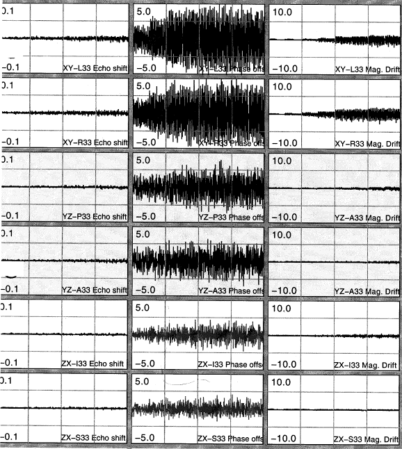

| (LINKS TO GE INTERNAL WEBSITE) |
Vibration |
| The example below exhibits evidence of vibration. The vibration is primarily seen in the constant phase plots, though you may see some similar evidence of vibration in the echo shift and magnitude tests but to a lesser degree. |
Additionally evidence of vibration will be best seen
in the FSE stability plots but could also be seen in the FGRE plots but to
a much lesser degree.
|

John
Ward Rev.
1 26-Jun-2001